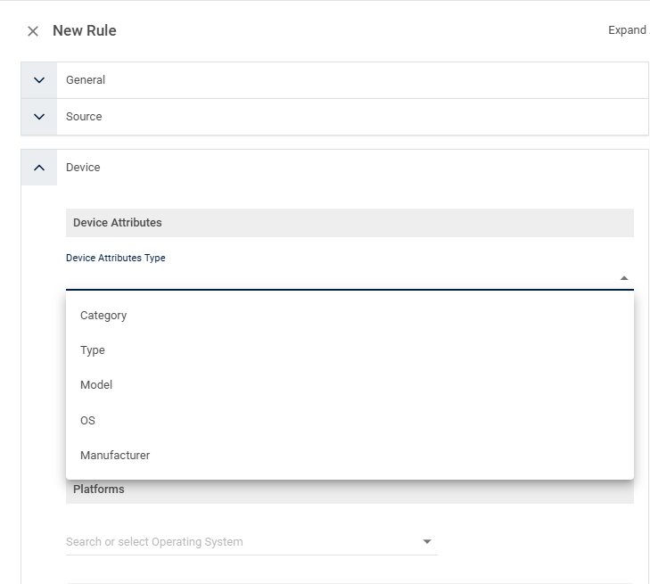
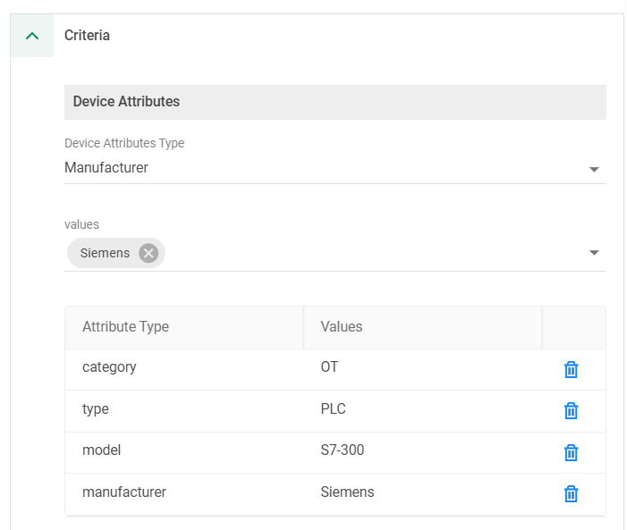
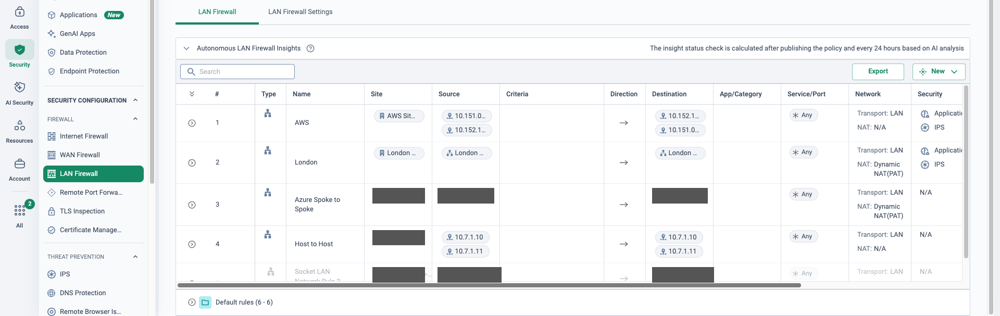
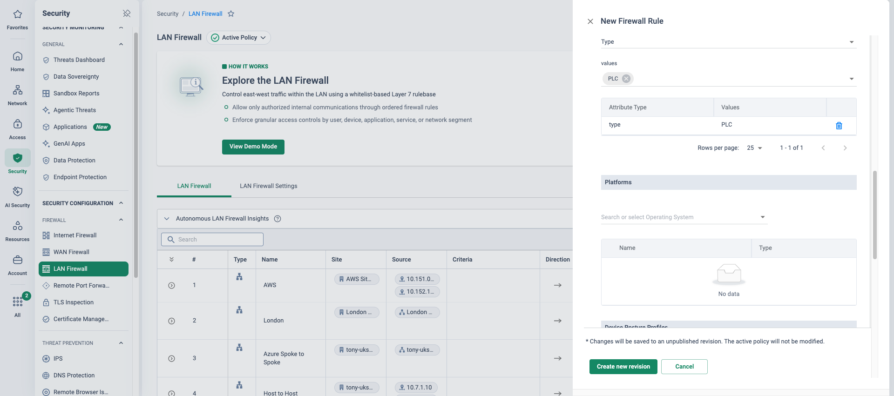

Why this matters
Manufacturing security starts with a question most organisations can't answer: what is actually connected to the plant network? OT and IoT devices arrive with the machinery, get plugged in by integrators, and stay for decades. They can't be patched on demand, can't run agents, and were never designed to defend themselves.
The objective is threefold: visibility of every OT/IoT device type on the network, contextual policies applied to those devices based on what they are, and one consistent security policy for every device and user — configured once, applied everywhere.
Why OT/IoT devices are hard to secure
No agents, no patching
PLCs, HMIs and sensors run embedded firmware. There is nothing to install an EDR agent on, and patch windows are measured in months — production uptime always wins.
Flat OT networks
Plant networks were built for availability, not security. Once a single device — a camera, a smart plug — is compromised, nothing stops lateral movement towards the SCADA layer.
IT/OT convergence
Historians and MES need to exchange data with enterprise ERP. Every new IT-to-OT connection widens the attack surface across the boundary the Purdue model says to defend.
“Can you list every device on your plant floor right now — and if one camera or PLC were compromised today, what stops it moving laterally to your SCADA servers, or calling out to the internet?”
Where this sits in the Cato SASE platform
- The Socket passively discovers every plant device: category, type, model, OS and manufacturer; no agents.
- Its LAN firewall enforces micro-segmentation between Purdue levels on the plant floor itself.
- WAN and internet policy is enforced at the PoP: a PLC dialling out to the internet is dropped.
- A maintenance vendor reaches only the jump server over ZTNA; every allow and block is an event in the CMA.
Configured once, applied everywhere, contextually aware
Cato passively discovers and classifies every device behind the Socket — no agents, no scanners, no disruption to production traffic. Each device is identified by category, type, model, OS and manufacturer, and those attributes become policy objects. A rule can target “every PLC”, “every Siemens S7-300”, or “every IP camera on old firmware” — and it applies automatically as matching devices join the network.
Segmentation follows the frameworks OT teams already use. The Socket's LAN firewall enforces micro-segmentation between Purdue levels and IEC 62443 zones on the plant floor itself, while WAN and internet policy is enforced at the Cato PoP — one policy model spanning LAN, WAN and cloud.
Key benefits
Reduced operational complexity
Global policies built on device type and function — configured once in the CMA, applied at every site, no per-plant firewall estate to maintain.
Context- and identity-aware membership
Devices join policies by what they are — category, type, model, OS, manufacturer — not by fragile IP ranges that drift out of date.
Smaller threat landscape via ZTNA principles
Every device gets only the access its function requires; advanced threat protection (IPS, anti-malware) inspects the traffic it is allowed to send.
Reduced risk of lateral movement
LAN firewall micro-segmentation between Purdue levels means a compromised camera or smart plug cannot pivot to the SCADA layer.
Policies built from device attributes
Device-attribute rules are ordinary firewall rules — same rulebase, same actions, same event tracking — with the source defined by what the device is rather than where it sits on the network.



Typical manufacturing policies — a starter rulebase
The device-attribute screenshots above show the shape of a live rulebase; this section turns that shape into a deployable starting point for a plant. It maps the Purdue levels in the diagram to a concrete set of rules an SE can stand up on day one and then tighten — the OT equivalent of the camera, smart-plug and TP-Link rules already running in the rulebase screenshot, extended down to the control layer.
Every rule below is illustrative and is meant to go live on Allow · Event first. Discovery before enforcement is the rule everywhere in Cato; on a production line it is non-negotiable. You never block first on a live plant — watch the events, confirm nothing legitimate is being caught, and only then flip a rule to Block. A false positive here stops a machine, not a web page.
Starter rulebase (illustrative)
| # | Name | Source / device criteria | App / Category / Destination | Action | Track |
|---|---|---|---|---|---|
| 1 | OT/IoT discovery — baseline visibility | Category = OT · IoT (any type) | Any — monitor phase | Allow | Event |
| 2 | HMI → PLC — in-cell control | Type = HMI | PLCs in same cell · control protocols (S7 · Modbus · EtherNet/IP) | Allow | Event |
| 3 | Engineering workstations — vendor updates | Engineering-Workstations group | Vendor update FQDN allowlist (e.g. Siemens · Rockwell) | Allow | Event |
| 4 | Vendor remote access — scoped ZTNA | Vendor IdP group · ZTNA app segment · time-bounded window | Jump server / one cell app only · session recorded | Allow | Event |
| 5 | Cameras · scales · label printers | Type = IP camera · weigh scale · label printer | NVR / MES function servers only — no internet | Allow | Event |
| 6 | PLCs / controllers — no internet egress | Category = OT · Type = PLC / controller | Internet (any) | Block | Event |
| 7 | IT ↔ OT boundary — default-deny | IT / corporate subnets | OT zones (Purdue ≤ L3) — except the explicit rules above | Block | Event |
| 8 | Corporate IT — standard policy, LAN-separated | Corporate LAN users (same site / same Socket) | Internet · SaaS — normal internet policy | Allow | Event |
Rules 2–8 are read top-down, first-match; the discovery baseline (rule 1) is the monitor-phase catch that logs everything while you learn the floor, then narrows as the specific allows and blocks are trusted. Corporate IT and the OT devices can share the same site and Socket — the LAN firewall keeps them apart, so rule 8 leaves office users on their normal internet policy while the plant stays segmented. Vendor remote access (rule 4) is the rulebase face of De-risking 3rd-Party & Supply Chain Access — identity-driven, least-privileged, time-bounded and recorded.
Manufacturing scenarios
Line-down triage. A cell stops and the integrator blames “the new firewall”. Filter Monitor → Events to that cell: the events prove whether a Cato rule dropped anything or the traffic never arrived — turning a finger-pointing call into a five-minute answer that clears the network and the policy.
OEM engineer site visit. A machine builder needs to touch one line for two days. Enable the scoped ZTNA rule (rule 4) for their IdP identity with a time-bounded window to a single cell — recorded, least-privileged, and it expires on its own. No jump-box credentials shared, no standing route to the control layer.
New cell commissioning. A new production cell arrives full of unknown devices. Run a discovery-mode week: everything on Allow · Event, watch the inventory populate and the flows settle, then lift the real traffic pattern straight into allow rules before flipping the boundary to default-deny.
Insurance / audit questionnaire. The cyber-insurer or an IEC 62443 assessor asks “how is OT segmented from IT and the internet?” The rulebase above plus the live event hit-counts are the evidence — a screenshot of the boundary default-deny and the PLC internet-block, with counts, answers the question directly instead of with a promise.
How to run the demo
Ask which frameworks they align to (Purdue, IEC 62443), which OT vendors dominate their floor, and whether they have ever had a full device inventory. Use their answers to pick the device you build a rule for.
-
Start with discovery
Assets → Device Inventory
Show the devices Cato has discovered and classified passively from traffic — no agents, no scanners. Walk the attribute columns: category, type, model, OS, manufacturer. This is the visibility they don't have today.
-
Frame it against the Purdue model
Map what the inventory shows to Purdue levels and IEC 62443 zones using the diagram above: field devices and PLCs at Level 0/1, HMI and SCADA at Level 2, historian and jump server at Level 3, enterprise IT at Level 4/5.
-
Build a device-attribute rule
Security → Internet Firewall
Create a new rule with Device Attributes as the source: Manufacturer = Siemens, Type = PLC (add Model = S7-300 for precision). Set the action to Block internet egress and Track = Event. Any matching PLC — at any site, now or in future — inherits this rule automatically.
-
Show segmentation between levels
Security → WAN Firewall
Walk the segmentation rules: HMI allowed to reach PLCs on control protocols, historian allowed northbound to enterprise apps, everything else cross-level denied by default. The same micro-segmentation logic is enforced on-LAN by the Socket's LAN firewall — a compromised device cannot pivot between Purdue levels inside the site.
-
Restrict the maintenance vendor
Security → WAN Firewall
Show the vendor's access scoped to the jump server only — identity-driven ZTNA for the user, device-attribute segmentation for the equipment they maintain. No route to the SCADA or control layer.
-
Prove it with events and hit counts
Monitor → Events
Filter events to the block rules and show live hits — the rulebase screenshot above shows a TP-Link internet block at 193.7K hits. Every allow and block is logged and attributable to a device, not just an IP.
How to prove it in the customer's tenant
The demo shows segmentation in our tenant; the PoV is a segmentation pilot on one plant site in theirs — one OT VLAN brought under the LAN Firewall in monitor mode, its east-west traffic to the corporate VLAN observed, and exactly one agreed flow restricted with the evidence to show for it. Week zero is the inventory: run the Asset Discovery & Device Inventory PoV first and inherit its output — the classified OT/IoT estate and the Segmentation Flows evidence for the pilot site. That page owns the inventory criteria; this one owns segmentation and enforcement. Agree the criteria below before configuring anything, per Running a Cato PoV — and one rule stands above the framework here: this is a production plant. Monitor-first discipline is not just good PoV hygiene in OT, it is safety-critical — a false positive stops a machine, not a web page. Nothing blocks anything until the OT engineer has read the events and signed off the one flow that will be.
| Success criterion | What we demonstrate | Evidence artefact | Where in the CMA |
|---|---|---|---|
| Pilot site's OT/IoT estate inventoried (week zero) | The discovery PoV has run and its output is accepted: the OT VLAN's devices classified, and Segmentation Flows showing what they actually talk to | The inventory extract and Segmentation Flows capture handed over from the asset-discovery PoV | Assets → Device Inventory |
| One OT VLAN under LAN Firewall control — monitor-first | A LAN Network rule scopes the pilot site's OT VLAN into the LAN Firewall with a catch-all Allow · Event rule above the default block — everything flows, everything logs | The rulebase showing the LAN Network rule, the catch-all monitor rule and its first events | Security → LAN Firewall · Monitor → Events |
| East-west traffic observed, then restricted | OT VLAN ↔ corporate VLAN flows are mapped from a week of monitor events; then one agreed, non-safety-critical flow is flipped to Block | The observed flow map, and the blocked lateral-movement event — the money artefact of the whole PoV | Monitor → Events |
| Device-attribute rule demonstrated | Where detection supports it (Socket v26+, MAC-detected devices), a rule matches on what a device is — e.g. Type = PLC — not its IP | The rule with its device criteria visible, plus a matching event attributed to the device | Security → LAN Firewall |
| No production disruption (the OT golden rule) | Zero unexplained drops on OT traffic for the whole PoV; the single block rule was agreed with the OT engineer in writing and is reversible in seconds | The event log for the pilot window showing no unagreed blocks, plus the signed change record | Monitor → Events · Administration → Audit Trail |
- Week zero complete: the asset-discovery PoV has run on this site — its IoT/OT Security licence, discovery window and MAC-detection groundwork carry straight over.
- Socket version — re-verify, don't assume: the LAN Firewall is an account-level policy under Security → LAN Firewall, scoped per site and VLAN in the rule and enforced locally on the Socket. Per the LAN Firewall KB it is supported from Socket v22, and per the policy KB device criteria need Socket v26 or higher. Week zero checked this once; check it again before the plan promises a device-attribute rule.
- MAC detection: device-attribute rules are enforced only for devices whose MAC address was detected — Cato recommends the Cato DHCP service at the site to help ensure it (Device Inventory KB). Devices behind an L3 boundary present the router's MAC, not their own — know which OT cells are routed before you promise attribute rules there.
- The OT VLAN: defined as a network range on the pilot Socket, with its traffic actually traversing the Socket — a cell hanging off its own switch stack that never crosses the Socket cannot be segmented by it.
- A named OT engineer with authority: the plant-side owner who reads the flow map, nominates the one non-safety-critical flow that may be blocked, and signs the change. No sign-off, no block — this is a criterion, not a courtesy.
- Rollback agreed in advance: the block is one rule; disabling it restores the previous behaviour immediately. Write the rollback into the change record before the rule exists.
- Not needed: TLS inspection, client rollout or identity integration — LAN segmentation is enforced on the Socket and this pilot deliberately touches no endpoint.
Configuration walkthrough
-
Inherit week zero — the estate and its flows
Assets → Device Inventory
Open the pilot site's inventory filtered to the OT VLAN and walk it with the OT engineer: every PLC, HMI, drive and camera named, and the Segmentation Flows view showing the protocols and destinations each device actually uses. This is the handover artefact from the discovery PoV — date it into the evidence doc as item zero. If it doesn't exist yet, stop and run week zero first.
-
Baseline east-west before touching policy
Monitor → Events
Before any LAN Firewall rule exists, intra-site traffic that matches no LAN rule is treated as WAN traffic and handled at the PoP — which means the OT VLAN ↔ corporate VLAN conversations are already visible in events and analytics today. Capture a dated baseline of who talks to whom across that boundary. This is the "before" picture the blocked-flow evidence will be read against.
-
Bring the OT VLAN under the LAN Firewall — safely
Security → LAN Firewall
Create a LAN Network rule scoped to the pilot site and the OT VLAN. Know what this does: per the KB, a LAN Network rule carries a default ANY-ANY Block as its last child rule — zero-trust by design — so scoping the VLAN in with no allow rules is itself an act of enforcement. Monitor-first therefore means creating the catch-all in the same change: an Any-Any Allow with Track = Event rule above the default block. Net effect: nothing drops, every east-west flow in the OT VLAN now lands in Events, enforced locally on the Socket.
-
Watch a week, write the flow map
Monitor → Events
Let the monitor rule run across at least one full production cycle — shift patterns, batch jobs and weekly backups all generate flows a quiet Tuesday won't show. Then sit with the OT engineer and turn the events into a written flow map: which flows are production (HMI → PLC, historian northbound), which are legitimate but ugly (a vendor laptop, a shared USB-network bridge), and which nobody can explain. The KB recommends tracking only high-priority LAN rules in steady state — the catch-all Event rule is deliberate and temporary, and saying so is part of the credibility.
-
Author the allow rules — attribute-based where detection supports it
Security → LAN Firewall
Convert the agreed flow map into explicit Allow · Event rules above the catch-all: HMI → PLC on the control protocol, historian → corporate on its named service. Where the devices are MAC-detected and the Socket is v26+, build at least one rule on device attributes — e.g. Type = PLC as a destination — so the rule follows the device, not its IP. Where the classifier has no name for a niche OT protocol, match on port and protocol instead: the LAN Firewall matches L2–4 natively, with L7 application identification an optional per-site extra. An honest port-based rule beats a wrong app-based one.
-
Flip the one agreed flow to Block
Security → LAN Firewall
With the OT engineer's written sign-off, in an agreed window, change exactly one rule to Block with Track = Event — the single, non-safety-critical flow nominated from the flow map (the classic candidate: corporate workstations reaching the OT VLAN directly). Then prove it: generate the traffic from a corporate machine and watch the blocked lateral-movement event land, attributed to source, destination and — where detected — the device itself. That event is the artefact the decision meeting is built on. The rollback is the same rule, disabled: seconds, not a change request.
-
Close the no-disruption criterion
Monitor → Events Administration → Audit Trail
Sweep the pilot window's events with the OT engineer: every block matches the one agreed rule, and no production flow was dropped unexplained. Pair that with the Audit Trail record of who changed what, when — the governance story writes itself. Then read the evidence out against the criteria table, per the PoV framework: inventoried, monitored, mapped, restricted, undisrupted.
What good output looks like
Three exhibits carry the wrap-up: the LAN Firewall rulebase for the OT VLAN — explicit allows above the catch-all monitor rule, one block, hit counts live; the blocked east-west event with its device attribution; and the week-zero inventory beside the flow map that justified every rule. The device-attribute rulebase in Policies built from device attributes is the destination shape — allows logging and a block accumulating hits once monitor mode has graduated; the PoV builds it for one OT VLAN and the rollout repeats it per site from the same account-level policy. The captures below show where those rules are written.


Troubleshooting
The device-attribute rule never matches
Attribute rules are enforced only for MAC-detected devices. Check the device's record in the inventory: no MAC, no match. The Cato DHCP service is the KB's recommended fix; and re-confirm the Socket is v26+, the version device criteria require.
Devices behind an L3 boundary aren't MAC-detected
A routed OT cell presents its router's MAC for every device behind it, so attribute detection sees one device where there are forty. Segment those cells with IP-range and port rules instead, and note the boundary honestly in the criteria — attribute rules where detection supports them, not everywhere.
The classifier has no name for an OT protocol
Mainstream control protocols may be identified; a proprietary or serial-over-IP protocol may not be. Don't force it: the LAN Firewall matches L2–4 natively, so write the rule on port and protocol from the observed flows. L7 identification is an optional per-site extra, not a dependency.
The plant is flatter than anyone admitted
If OT and corporate share one broadcast domain, there is no VLAN boundary for the LAN Firewall to scope to. The pilot then starts one step earlier: stand up an OT VLAN for one cell (or use the flow evidence to justify doing so) — the discovery data tells you exactly which devices move into it.
Expected traffic never appears in LAN Firewall events
Intra-site traffic matching no LAN rule is treated as WAN traffic and handled at the PoP — check WAN Firewall events for it, then check the LAN Network rule's scope actually covers both VLANs in the conversation. Traffic that never crosses the Socket at all (an isolated switch stack) is invisible to both.
The catch-all monitor rule is noisy
By design — but the KB recommends tracking only high-priority LAN rules in steady state, because events add overhead over the tunnel. Keep the catch-all Event rule for the observation window, then retire it as explicit allows take over. If event volume swamps the review, filter by the OT VLAN and work flow-by-flow.
Gotchas & clean exit
- Never block OT traffic without the plant engineer's sign-off. Not as a formality — as a hard gate. The PoV's block scope is one agreed, non-safety-critical flow, chosen by the person who answers for the line. Everything else stays in monitor mode for the duration, however tempting the event data makes it.
- Scoping a VLAN into the LAN Firewall is not passive: the default ANY-ANY Block under a LAN Network rule means an OT VLAN scoped in without its catch-all allow is being enforced, immediately. Build the LAN Network rule and the monitor rule as one change, never two.
- Attribute rules have physics: MAC detection, Socket v26+, and L3 boundaries bound what device-attribute policy can see. Write the criterion as "demonstrated where detection supports it" so a routed cell is a documented limit, not a failed PoV.
- One site is one site: the pilot proves the mechanism and the method; estate-wide segmentation is the project it justifies. The account-level policy means the rollout is the same rulebase re-scoped — say that in the wrap-up, don't imply it happened.
Exit: unwinding is deliberately trivial — disable the one block rule and the plant behaves exactly as before; retire or keep the monitor rules as the customer prefers. The better outcome is that nothing is unwound: the monitor rulebase becomes row one of the segmentation rollout, the flow map becomes its design document, and the blocked-flow event goes in front of whoever owns cyber-insurance and IEC 62443 answers. Every change made and removed stays recorded in Administration → Audit Trail — the PoV leaves the plant untouched and the argument made.